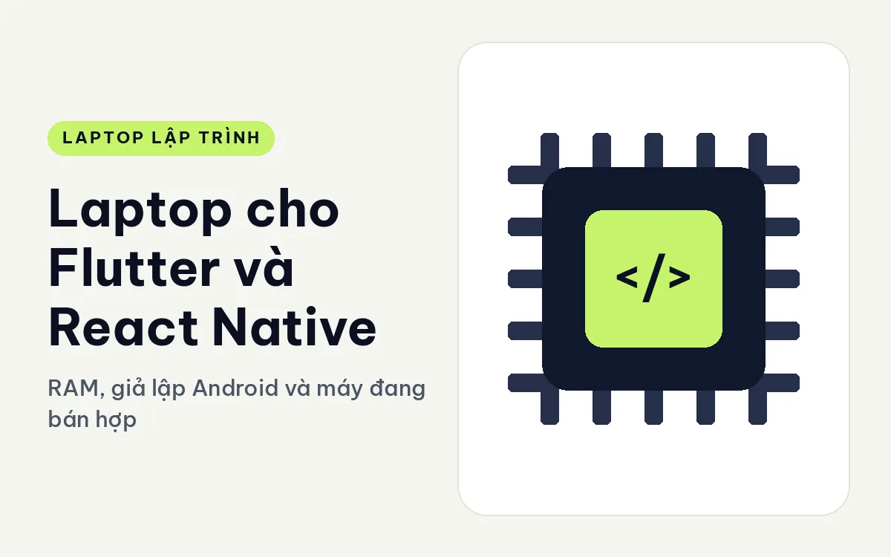
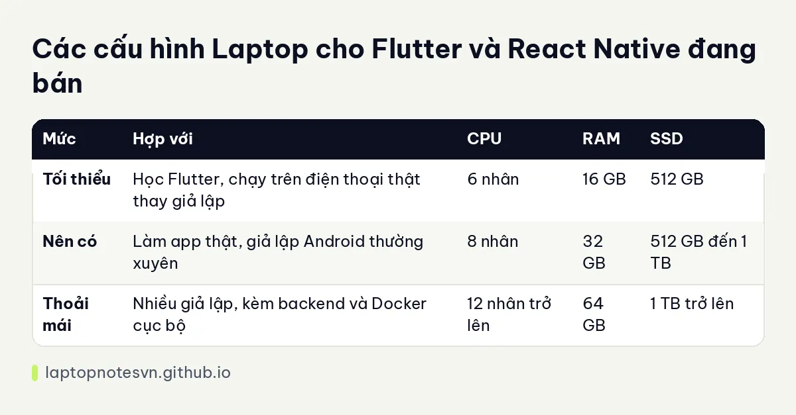

Laptop cho Flutter và React Native - RAM, giả lập Android và máy đang bán hợp

Làm ứng dụng di động đa nền tảng bằng Flutter hay React Native nghe nhẹ nhàng hơn viết native, nhưng thực tế máy của bạn vẫn phải gánh một đống thứ: trình soạn code, bộ build Gradle, trình giả lập Android, Node hoặc Dart chạy ngầm, và đôi khi cả trình duyệt để xem bản web. Chỗ nghẽn thường là RAM chứ ít khi là CPU.
Bài này nói về những gì phần cứng cần đáp ứng, bảng cấu hình ba mức và hai máy đang bán hợp với dân làm app. Các mức bên dưới là kinh nghiệm tư vấn, và có một điểm cần nói rõ ngay về iOS ở phần cuối.
Giả lập Android ăn tài nguyên ra sao
Trình giả lập Android là món tốn kém nhất. Nó dựng nguyên một thiết bị ảo có RAM riêng, màn hình, GPU ảo, và chạy bằng ảo hóa phần cứng. Một thiết bị ảo thường chiếm từ vài GB RAM trở lên, chưa kể Android Studio hay VS Code đang mở, và Gradle khi build.
Gradle cũng nặng. Build Android lần đầu tải nhiều thư viện và biên dịch nhiều thứ, các lần sau nhanh hơn nhờ bộ nhớ đệm. CPU nhiều nhân giúp lần build sạch rút ngắn, còn SSD tốt giúp bộ nhớ đệm hoạt động trơn tru.
Với Flutter, hot reload nhanh nên bạn ít khi cần build lại hoàn toàn, nhưng khi đổi plugin hoặc cấu hình gốc thì vẫn phải build đầy đủ. React Native thêm trình đóng gói Metro chạy trên Node, nhẹ hơn nhưng vẫn là một tiến trình chiếm RAM cùng lúc.
Bạn cũng nên giữ ý thức về nhiệt. Chạy giả lập và build liên tục một lúc lâu có thể khiến máy giảm xung nếu tản nhiệt yếu, nên máy có quạt chất lượng và vỏ tản nhiệt tốt sẽ cho trải nghiệm ổn định hơn.
Bảng chọn cấu hình nhanh
| Mức | Hợp với | CPU | RAM | SSD |
|---|---|---|---|---|
| Tối thiểu | Học Flutter, chạy trên điện thoại thật thay giả lập | 6 nhân | 16 GB | 512 GB |
| Nên có | Làm app thật, giả lập Android thường xuyên | 8 nhân | 32 GB | 512 GB đến 1 TB |
| Thoải mái | Nhiều giả lập, kèm backend và Docker cục bộ | 12 nhân trở lên | 64 GB | 1 TB trở lên |
Nếu còn lăn tăn về chuyện 16 hay 32GB, bài lập trình viên cần bao nhiêu RAM phân tích từng mức theo công việc.

Chọn máy nào cho Flutter và React Native
Cho người mới làm app cần máy gọn nhẹ, Lenovo ThinkPad T14 Gen 7 (2026) có RAM 32GB LPDDR5x 7467 dạng LPCAMM2, chip Core Ultra 5 325 hoặc Core Ultra 7 355 đều 8 nhân, SSD 512GB, nặng từ 1,29 kg. Với 32GB, bạn chạy giả lập Android, Android Studio và Metro cùng lúc khá thoải mái. Mô tả còn ghi bộ nhớ có thể nâng đến 64GB nếu dự án lớn thêm.
Nếu cần màn lớn để xem cả giả lập, code và log cùng lúc, hãy nhìn DELL XPS 16 DA16260 (2026). Máy dùng Core Ultra X9 388H với 16 nhân, RAM 32GB LPDDR5X 9600, SSD 1TB, màn 16 inch 2K, nặng dưới 1,7 kg. Chip nhiều nhân giúp build Gradle nhanh hơn, và SSD 1TB chứa thoải mái nhiều hình ảnh hệ thống Android. Đổi lại, màn 16 inch làm máy cồng kềnh hơn dòng 14 inch khi mang đi.
Chuyện iOS và máy Mac
Điều cần nói thẳng: muốn build và đưa ứng dụng lên App Store thì bạn bắt buộc phải có máy Mac, bất kể dùng Flutter hay React Native. Laptop Windows chỉ giúp bạn phát triển và kiểm thử phần Android cùng giao diện web. Nhiều người giải quyết bằng cách mượn một máy Mac cũ hoặc thuê Mac trên mây để build bản iOS cuối.
Với người mới, một cách thực dụng là làm trên Android và kiểm thử bằng điện thoại thật cắm cáp. Điện thoại thật chạy nhanh hơn giả lập, không tốn RAM máy, và cho cảm giác sát thực tế hơn.
Chọn theo framework và quy mô app
Flutter biên dịch sang mã máy nên khâu build bản phát hành khá nặng, nhưng trong lúc phát triển hot reload giữ nhịp làm việc nhanh. React Native chạy JavaScript, nhẹ hơn khi phát triển, song cây thư viện Node thường rất lớn và thư mục node_modules có thể chiếm nhiều GB mỗi dự án.
App nhỏ như danh sách, form, gọi API chạy ổn trên cấu hình 16GB. Khi app lớn dần, có nhiều màn hình, hoạt ảnh, bản đồ và thông báo đẩy, thời gian build và dung lượng đệm cũng tăng theo. Đội làm sản phẩm thật nên chọn 32GB để máy không thành điểm nghẽn.
Nếu bạn là người làm một mình, vừa lo app vừa lo backend nhỏ, máy vẫn cần chứa thêm cơ sở dữ liệu và máy chủ thử. Gộp tất cả vào một laptop khiến RAM cạn nhanh, vì vậy hãy tính tới dư địa nâng cấp ngay từ lúc chọn máy.
Mẹo dùng máy hằng ngày
- Bật ảo hóa trong BIOS để giả lập Android chạy nhanh, nếu không nó sẽ rất chậm.
- Đặt SDK Android và thư mục dự án trên SSD trong, tránh ổ ngoài chậm.
- Giới hạn RAM cấp cho thiết bị ảo ở mức vừa phải, đừng để giả lập chiếm hết bộ nhớ.
- Dọn thư mục build và bộ nhớ đệm Gradle định kỳ, chúng phình ra nhanh sau vài tháng.
- Cắm điện thoại thật khi kiểm thử cảm ứng hay camera, giả lập không thay được những phần này.
Người có ý định làm cả backend cho app có thể tham khảo bài laptop cho Java Spring và IntelliJ để biết thêm cách chia RAM cho dịch vụ nền.
Đăng ngày 09/11/2026